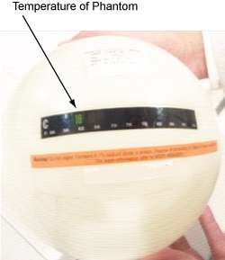
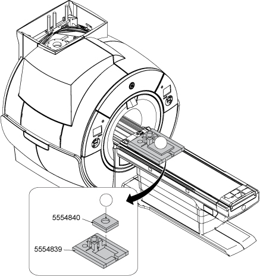
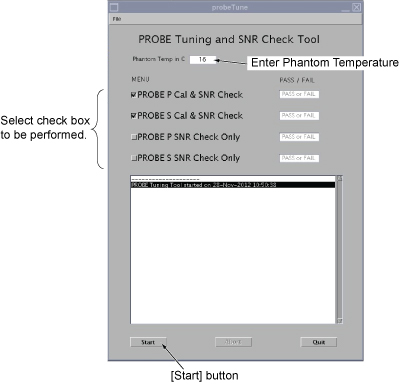
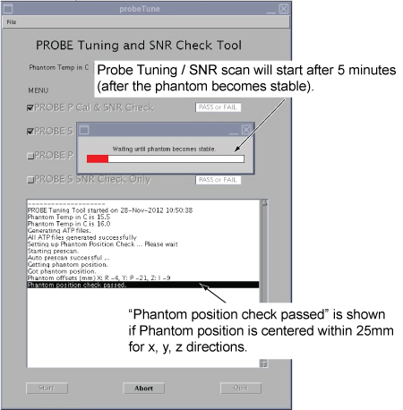
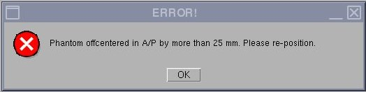
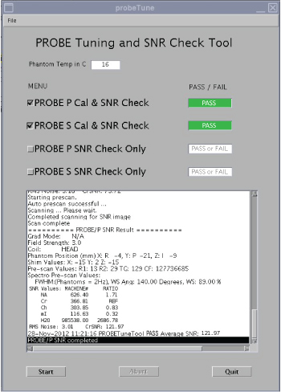
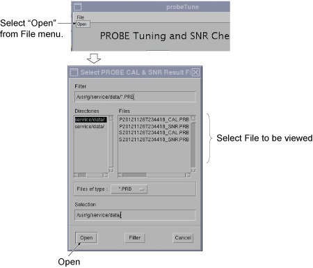
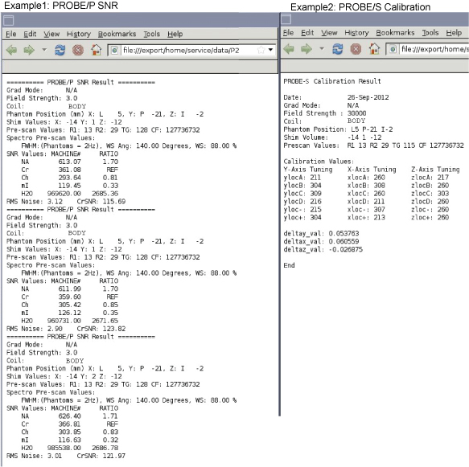

This tool runs both Echo Peak Location calibration (automated probe tuning script) and the probe signal-to-noise ratio (SNR) performance test.
Prerequisites
Personnel Requirements
Required Persons
Preliminary requirements
Procedure
Finalization
1
-
45 minutes
-
Tools and test equipment
Item
Quantity
Part number
Manufacturer
MRS Phantom without the Loader (required for the Probe SNR and used for the tuning process)
1
2152220
-
Service Foam Positioner
1
5554839
-
Foam Support for Head Phantom
1
5554840
-
Support of Probe
1
5796860
-
Service key
1
-
-
Required conditions
The PROBE-S option (M3333WH) is required at site to perform PROBE-S Cal & SNR Check or PROBE-S SNR Check only.
The PROBE-P option (M3333WG) is required at site to perform PROBE-P Cal & SNR Check or PROBE-P SNR Check Only.
Cancel all previous exams. Click End Exam.
Safety
Before working in any GE HealthCare MR suite or doing any GE HealthCare service procedure, you must:
Have read and understood all hazard conditions and safety requirements in the latest revision of the GE HealthCare MR Service Safety Manual (5452735).
Have successfully completed all relevant GE HealthCare Environmental Health and Safety (EHS) courses (or for non-GE HealthCare employees, equivalent workplace training courses).
Comply with all site-specific training and workplace safety requirements.
If you have any safety concerns at any time, do not begin work or immediately stop work and move to a safe location. Immediately contact your supervisor or site safety officer for instructions on how to proceed.
About this task
This section provides instructions for centering the phantom. There is no need to run a three-plane localizer before scanning because the tool automatically performs a phantom centering check. The tool also has a built-in wait time to allow the phantom to settle before scanning.
The Probe Tuning and SNR Check Tool is an essential part of conditioning a system for performing spectroscopy, to optimize both SNR and phasing. All tests can be run in one session; no interaction is needed during the calibration.
There are two Probe/SV pulse sequences: Probe-s and Probe-p:
The Probe-s sequence is a version of the stimulated echo acquisition mode (STEAM). This sequence is used for short echo time, single-voxel spectroscopy; that is, TEs shorter than 35 milliseconds.
The Probe-p sequence is a version of the point-resolved spectroscopy (PRESS) pulse sequence. The PRESS sequence provides twice the SNR of the STEAM sequence but at the expense of slightly longer minimum TEs.
This document describes two separate hydrogen-only spectroscopy (PROBE/SV) procedures:
PROBE signal-to-noise ratio (SNR) performance test
Procedure
Check the MRS phantom temperature shown in green on the surface of the phantom and record it.
Figure 1. MRS phantom temperature

Position the MRS phantom on the positioner. Phantom centering (up/down/left/right/in/out) within 25 mm of the isocenter in all directions is important. Landmark on the center of the phantom.
Figure 2. Position the MRS phantom

Start the PROBE Tuning and SNR Check Tool:
For non-proprietary service tools: From the CSD, select Calibration. Select PROBE Tuning and SNR Check from the Calibration menu, and select Click here to start this tool to start the procedure.
Result
The probeTune UI shows.
Set up the probeTune UI as follows:
Enter phantom temperature you recorded.
Select the checkbox of the check you will run.
Note If PROBE P Cal & SNR Check and PROBE S Cal & SNR Check are selected, it will take about 45 minutes to complete.
Figure 3. PROBE tune UI

Click Start.
The PROBE Tuning / SNR scan will start after five minutes (after the phantom becomes stable).
Figure 4. probeTune start window

Note If the phantom is off-center by more than 25 mm, the following error message will appear. In this case, set up the phantom, click OK in the message, and click Start again.
Figure 5. Error

The window below will show after selected tests are completed and passed. If the probe calibration fails, re-runRunning eddy current compensation and try probe calibration again.
Figure 6. PROBE tune complete screen

To view the Calibration and SNR results, select Open from File pull-down menu.
Figure 7. View result

Note
File Name example 1: P20121126T234418_SNR.PRB (PROBE P, Y=2012, M=11, D=26, Time=23:44:18, SNR)
File Name example 2: S20121126T234418_CAL.PRB (PROBE S, Y=2012, M=11, D=26, Time=23:44:18, Cal)
Figure 8. Example of file

The specification criteria is as follows.
PROBE-P/PROBE-S Calibration (absolute value)
Single delta parameter < 0.8
Note Single delta parameters are deltay_val, deltax_val, and deltaz_val.
Sum of all delta parameters < 1.0
PROBE-P SNR (Average of 3 SNR scans)
Cr SNR> 60
PROBE-S SNR (Average of 3 SNR scans)
Cr SNR> 30
To view the complete results for troubleshooting purpose:
Select C Shell.
NoteThe Shell window can only be launched when the EA3 user is included in the authorized EA3 group. Users not in this EA3 group will not have access to launch the Shell window. If you are not logged on as the proper logon user, log off and then log back on as the correct EA3 user with the authorized permissions.
Type: more /usr/g/tools/ProbeTune/probe_cal_SNR.log and press Enter.